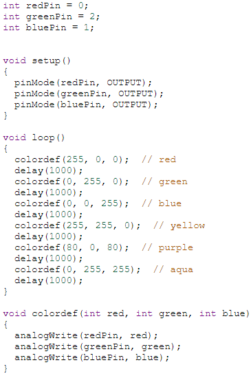
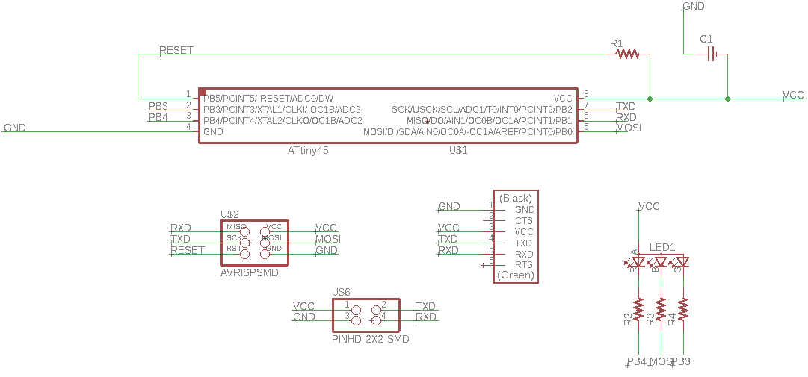
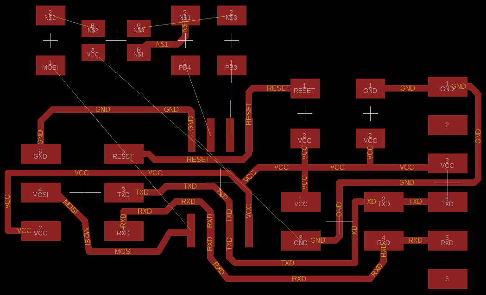
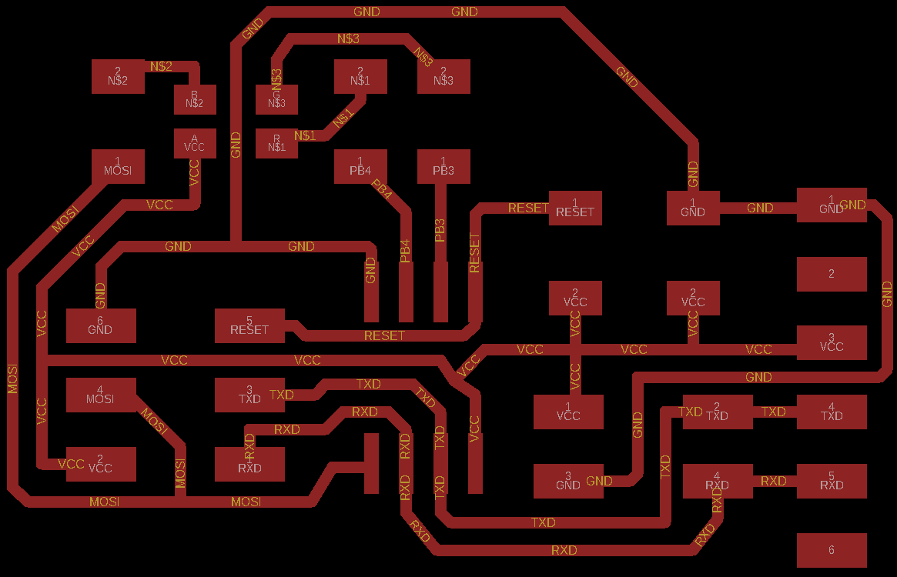
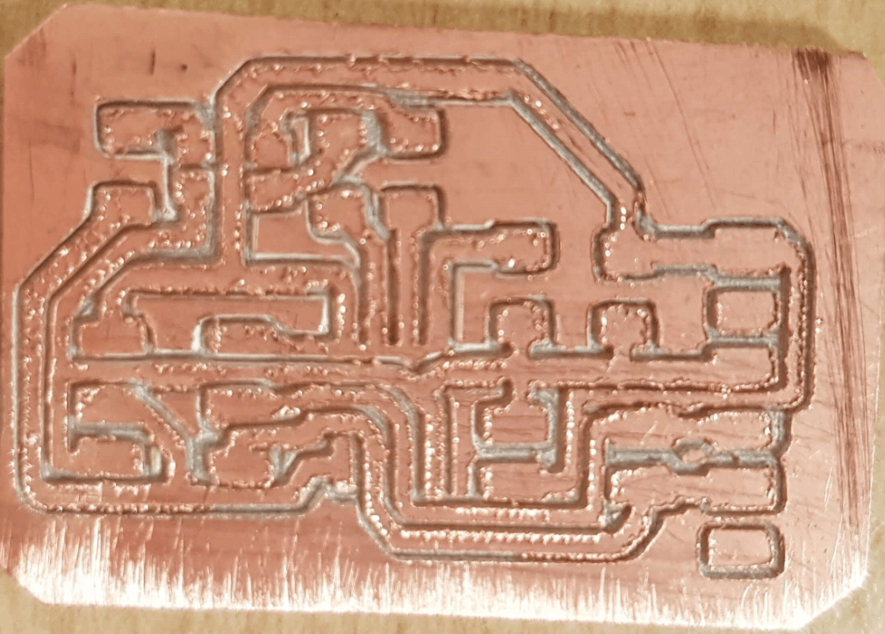
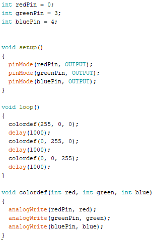

Output Devices
- Group: Test runout, alignment, speeds, feeds, and toolpaths for your machine
- Individual assignment: Measure something. Add a sensor to a microcontroller board that you have designed and read it.
Planning circuit
For this assignment I will use week 10 board as a base. Will replace both LEDs and button with a RGB light. Will keep FTDI and 2x2 header for networking assignment.
The code will make the board to turn both LEDs at different times when button is pushed.
Simulation
Using week 11 simulation as base, I replace both LEDs and button with a RGB light
The bill of materials used here is: (without FTDI and 2x2 headers)
- Attiny45 x1
- Red LED x1
- 1uF Capacitor x1
- 10 kOhm Resistor x2
- 499 Ohm Resistor x2
- Pushbutton x1

Programming
After connect everything, we add the code for this proyect. It is important to note that since we are working with an RGB, we need to use the "PMW" pins to regulate color. If we only use digital output, we could only get solid colors and mixes between them. However, pinout from tiny45 indicates we only have 2 pins for PWM work (pin 0 and 1), meaning green (pin 2) can only be used as solid color.

First part of the code is to set the pins I'm using to connect RGB LEDs. On setup function, pin are set as an output.
Now we jump to "colordef" function. There color parameters are created (red , green and blue) and set to be the parameter for the "analogWrite" function.
In loop, colors decided to light are defined. And that's it.
Can find the simulation here
Design
Using week 11 schematics as base, I replaced the LEDs and their resistors, the button and it's pullup resistor; with a RBG LED and 3 resistor on each leg. Similar to that week, 2x2 headers are used to later comm work.
Repeat same steps as week 11.



Milling and soldering
Same procedure like last week.
After milling noticed some tracks were connected! Used a cutter and then cleaned with a toothbrush. Also, due to the use of a broken 1/64 tool, the board had some debri on it. Had to remove with a lime.
Soldered, and continuity test. Everything was ok.

Programming
I only need to load the simulation programm to the tiny. But need to change the pin number to match the ones on the board.
"redPin", "bluePin" and "greenPin" are changed to 0, 4 and 3.

Soldered, and continuity test. Everything was ok.